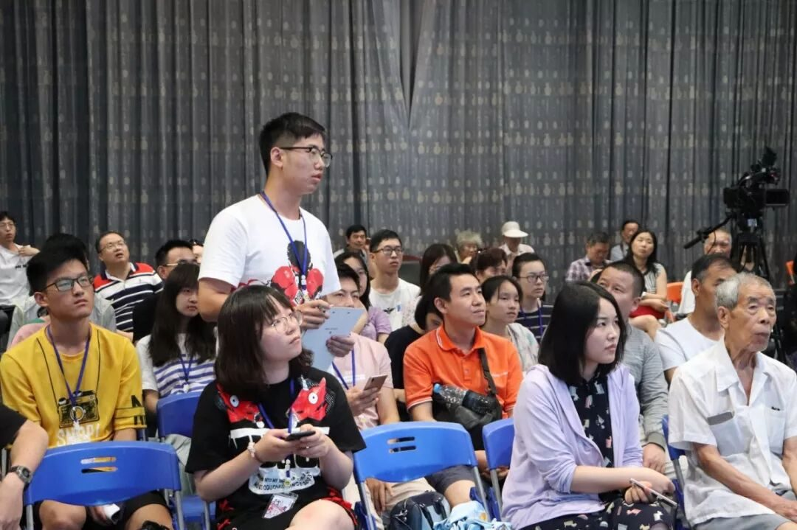
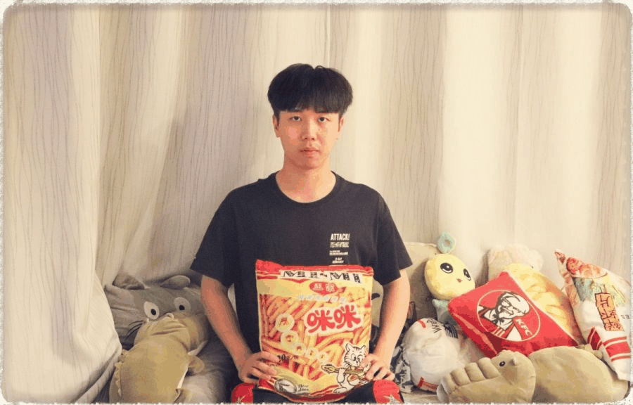
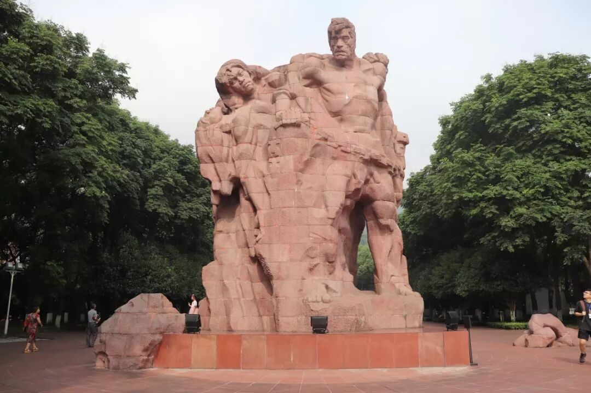
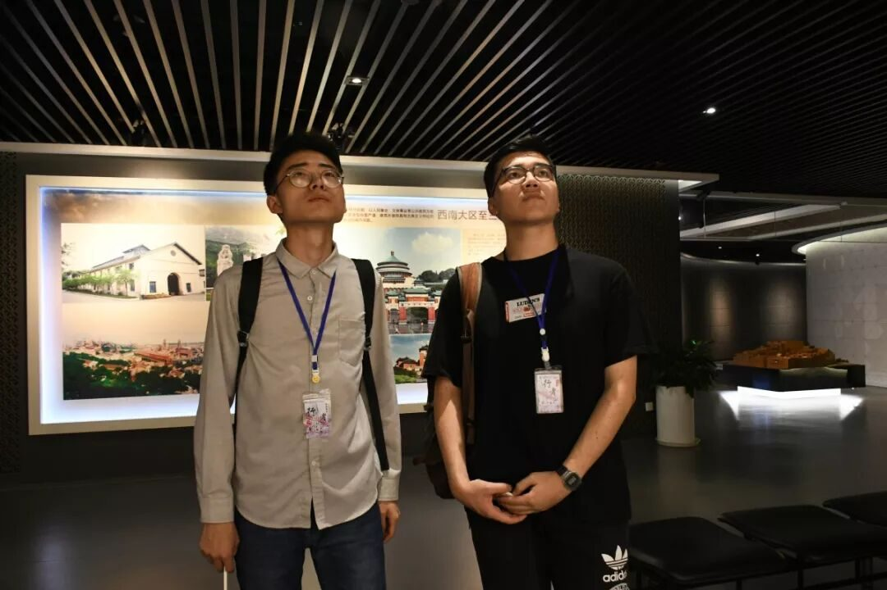
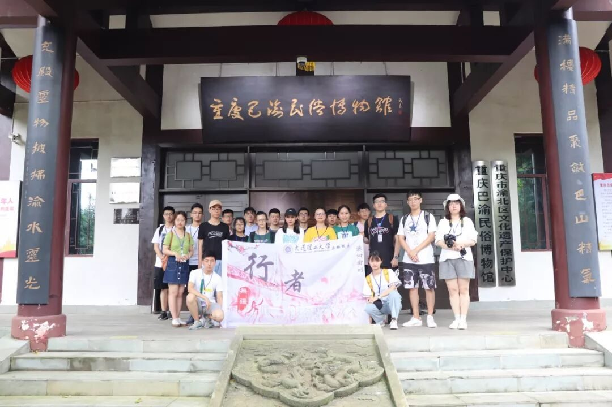

【渝传尺素·六】愿你如夏花之绚烂


行者
邓子孚

实践结束的当天晚上，我已经在回家的火车上。那一晚上，我思考了很多，我觉得这一期行者无疆改变了很多，我也收获了挺多。而其中我感到最明显的便是调研主题和团队文化。
在做过的三期行者无疆中，主题各不一样，拾遗皖徽中，我们在宣纸文化园、杨文笔庄、新中砖雕厂探寻非物质文化遗产的内涵；韶忆长安中，我们在阿房宫遗址、大明宫遗址、秦始皇陵兵马俑呼吁对于古迹的保护。而在源洄渝州这一期中，我们更多地是对于重庆人文精神的传承；在重庆，巴渝文化的地位是不可撼动的，而由于重庆的历史政治原因，其中的革命英雄文化对于重庆也有着不可磨灭的影响（两者的具体形式内容可在公众号主题篇查看《重庆十二时辰》），二者是重庆人文精神的重要组成部分，我们则力求在二者之间寻找其对于重庆人文精神的影响，加深文化精神的认识，并传承下去。

对于调研主题的选择，如果不加以解释，外界对于本次的行程安排或许会疑惑，这也是本次主题的一大难题，所以这也更需要我们去表达出我们的主题。两种文化在六日内一同调研，这要求行程的安排必须非常紧密，白天除了中午就餐，其余时间要么就是在学习，要么就是在路上。而在学习的过程中，我也明白了巴渝文化在重庆后来产生的很多重庆独特精神中都扮演着基础的作用；对于革命英雄文化让我印象最深刻的是便是渣滓洞集中营所凸出的红岩精神，在狱中的苦中作乐、在酷刑中的宁死不屈、在行刑前振聋发聩的遗言，无一不让人感到敬佩和感恩。


在源洄渝州中，行者无疆的团队文化也愈加浓烈。
1.在实践的第一天，有位小哥哥在路途中不幸崴脚，在搀扶他的过程中，团队很着急，大家都建议他先回青旅休息，我也不断向他讲述反复崴脚的危害，但这位小哥哥不为所动，说：“今天的文字是我负责，我必须了解行程的整个过程，不能走。”，于是他坚持下来，直到行程第四天实在没法走了才不甘回到青旅。他坚持、负责的精神让我感动，也让我感慨不已。

2.对于重庆文化的学习求真态度，大家也愈加认真，在重庆历史规划馆、三峡博物馆、建川博物馆、渣滓洞、川剧博物馆都不乏行者们拿起纸张、手机做记录的情景。在晚上回到青宿，大家都述说着当天的思考以及自己发现的细节，其中更有激烈的讨论，在对于“重庆网红文化”的问题中更是展开了辩论，有的行者还站起来表达自己的看法。于是我们带着这些问题在第二天的讲座上向周刘波老师“发难”。
3.重庆的地形气候对于团队也是一个大考验，导航失灵（目的地不在脚下却在头上）；在初次实践时，一路开心下坡的时候便已经预想到回去的难过；地形崎岖，甚至在城市中走上了山；气候闷热，在炎日下行走觉得不禁想到桑拿，即使多人共用防晒霜，回家也还是晒黑了不少。每天回青宿的地铁是最大的幸福，一路上虽然疲惫不已，但我们也看到了2号轻轨穿梭于城市之中的景象，看到了队旗上的千厮门大桥。行者旨在“行”字，好在我们坚持下来！


4.行程结束但工作并未结束，开会结束后，宣传、文字、采访等组的工作才刚刚开始，忙到1-2点也是常态，而期间也会有些行者也会帮忙买点吃的，陪陪大家。待到工作结束，互道晚安，一觉醒来，便开始忙碌的第二天了。
在我看来，行者无疆的团队文化便是团结互助、坚持负责、认真求实。

在行者无疆三期了，我一直思考做一期和三期的区别。从刚做第一期的摸索学习到第二期的运营协调再到第三期的创新传承。如果我没做到现在，可能有很多感悟也不会存在。
我也逐渐明白，作为大学生，我们的目的不是说要打造像人民日报那么大影响力的媒体或者强制大家传承中国传统技艺。很多东西，存在即合理；行者六期，每走进一个省份、一个城市，都带给大家不一样的物质遗产、文化古迹、历史精神，让大家有个意识，原来在祖国还有它们需要我们去了解、去传承、去保护。
行者无疆，在这里，感受到的是对于文化的热爱以及家一般的温暖，这也是行者无疆一直走下去的原因。最后衷心希望行者无疆越来越好，将来能踏足祖国34个文化之地，让文化之火一直延续。

来源丨行者无疆实践团
文字丨邓子孚
排版丨邓子孚
审核丨邓子孚 段智然
视频丨陈辉
行者无疆实践团
QQ：2758025831

随行者一起认识世界
长按二维码